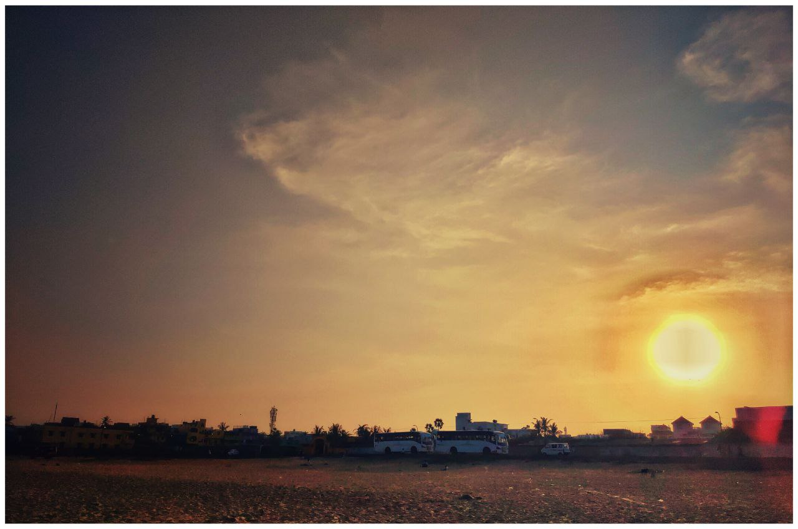
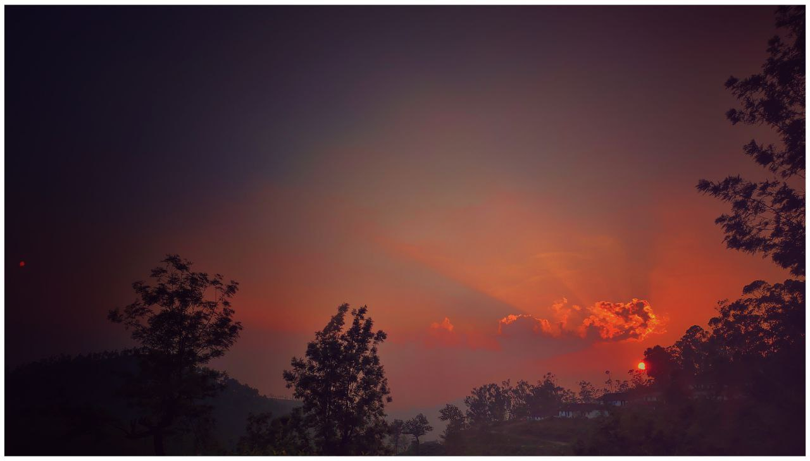
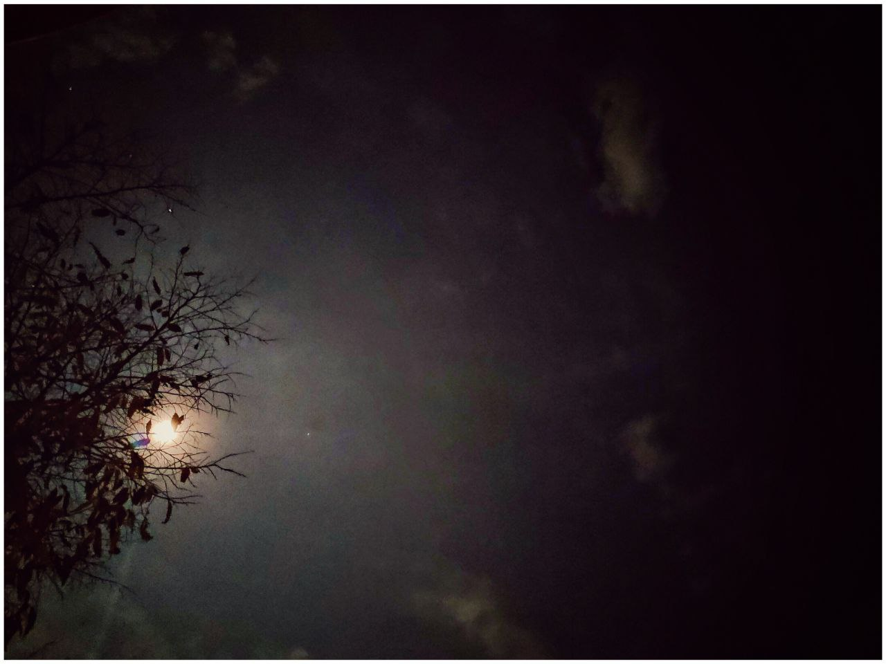
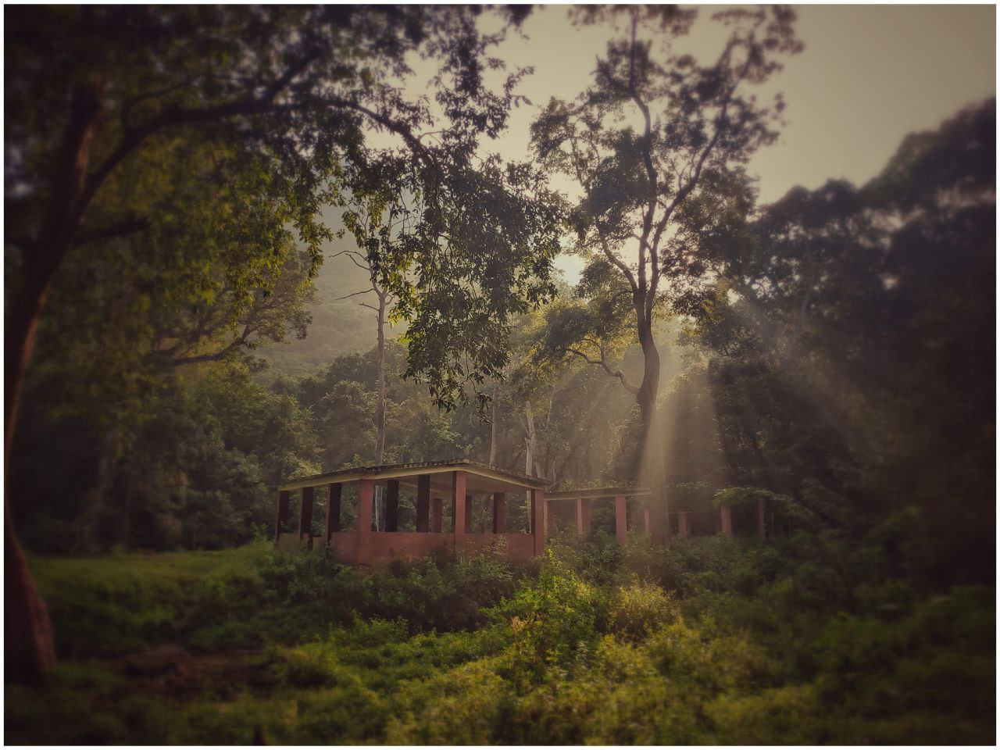

Foreword
[In progress]
Welcome.
If you're new here, you should probably know a couple of things.
Yes, this is a book. An evolving one, if you will.
- Use the menubar to navigate to the chapters of the book.
- Use the brush to change the theme of the book!
- You can use the search function to search for anything across the whole book.
You can view the CHANGELOG in the appendix to get the posts by day/month/year. You'll see the evolution of the book chronologically.
If you're still here, or already have been here, continue. You might find at least something useful somewhere along the pages. From the unwritten words. Between the pages. And I am genuinely happy about the fact that you wanted to check out this book. 🥰 My email's always open if you wanna chat.
About the author
I'm Rinaldo and I'm...
*thinks*
Hey, I don't really know what I am. Philosophically speaking, at least. But of course, nobody does (but wouldn't care to admit, mostly)
I'm trying to be a better human, developer, and writer. So that's what you'll probably read about throughout.
Structure of the site
(Randomly spread across chapters)
-
Spills
I write a lot of random things apart from my developer life, and that's what you'll find over here. Especially on random, unintellegible philosophical ideas. 🤷🏻‍♂️
-
Code Crumples
I'm a developer. I encounter a lot of interesting, and weird code patterns and styles of software development that I think more people should consider taking a look at.
-
README/Preface/Foreword
Ping! You're here. 🤪
And this site is subject to evolve, as does everything around us.
Chapter 1: Coding == Creation
My life, as a developer.
I've been a developer professionally for most of my adult life. Although what constitutes adulthood here is a question by itself. Most developers know better to have a blog of their own to share, record, and ponder upon their own journey in code. So along my journey to a become a better developer by the day, I'm planning to maintain a couple of chapters in the book to my life as a developer.
YABA: Yet Another Blogging Attempt
Don't Give up!
They say, right? People will shout all kinds of things. What do they know? It's hard. But there's much to words than meets the eye, of course. I should know - I write. A lot - Code, fiction, and non-fiction.
I've been trying to maintain a blog of my own for a while now(Years, in reality). It's hard for vareity of reasons. (People like giving excuses don't they?! 🤣) So here's my not-so-genuine excuse: Analysis Paralysis. There's plenty of options to create your own blog these days, and it's just overwhelming. I've been trying to maintain one since the early days of blogging (Indeed, I've had my early blogs in Blogger, WordPress, Tumblr, Knol (Now, I'm sure not many even know this!) but let's leave the past to it! Or perhaps another post for another day)
And along the many years I've attempted to have a personal blog of my own, I've learnt that life get's busy and we move onto other things. We evolve. In fact faster than ever before thanks to the technological advancements of the modern era. So the simplest way I could attempt something that doesn't require much work? Static Site Generators. (Spoiler alert: I was wrong) And I've been trying to choose one of the many, many SSGs lately and it's been exhausting!
Don't believe any new SSGs when they say it's easy to create and maintain your site on SSGs because it's not.
I'm a python heavy developer and naturally, I tried the many offerings on Python. Frankly, I thought I could directly start using Pelican(and nikola - narrowed down on it because we can directly, easily embed jupyter notebooks in it) And even had one. It wasn't easy because I kept forgetting the configurations and it was difficult to replicate elsewhere properly.
Recently, I've been trying to learn other (not-so) modern languages. Rust especially. And that's how I came across zola. And I should admit, it was easy to understand, set-up and even remember the configurations (because there isn't as many). Simple, to the point. I started writing on it. But guess what, even that got a bit unnecessarily complicated. I know, I know, I'm nitpicking, but writing shouldn't be so labourous, right? After all, I write every single day. So in order to feel a bit easy on the frontal lobe, I then moved on to MkDocs (Python dev, remember?) and then to MdBook (Yay, Rust!)
Moreover, instead of just thinking about having one, it's better to have one and then move onto others. It's time.
Chapter 2: The quarter life crisis
The certainty of uncertainty
The world tells you how to live. And then the world tells you you’re living it wrong.
You should take risks — they say.
But, taking risks comes at a cost. And you should be aware of it — they don’t say.
You’re afraid for no reason, silly. Don’t worry about it — they say.
But, being afraid ensures you are precautionary and prudent.
You shouldn’t ignore what you’re afraid of, rather analyze it — they don’t say.
You shouldn’t give up so easily — they say.
But, trying again and again, and again is draining. It’s okay to take a break — they don’t say.
You should work hard and stop being lazy — they say.
But, just because you work hard, doesn’t mean you should just be working everything in a hard way.
It’s more important to ensure if you’re working the right thing than hard — they don’t say.
You’re young and inexperienced. You should listen to your elders — they say.
But, you’re young and you have the power to change how you carry yourself forward.
You’re a wet clay and won’t stay wet for long.
Ensure what experiences you encounter before you’re tagged ‘experienced’ — they don’t say.
You should abide by the rules of the society to survive — they say.
But, survival in the society is taken care of — evolution will stay with you.
What matters is whether the rules that make your survival are meaningful, worthy, and morally right.
Because they often aren’t — they don’t say.
Life is uncertain.
You could cease to exist tomorrow.
You could cease to exist in a month.
Or you could live long enough to find immortality.
But you cannot know which. You can be hopeful. You can strive for that.
But you can’t be certain.
Why should you be certain anyway? What’s gonna come out of it? Perhaps the tiny superiority that you were right? Or perhaps, you can pretend you know where you are going and what you're doing?
The beauty of life, lies in its uncertainty. It always does. The chaotic nature of it all is what’s requiring order which in turn powers new chaos. It’s okay to live today. It is better to live today and also wonder and be hopeful about tomorrow. Take it all in. One day at a time. Once experience at a time.
Breathe and be certain that uncertainty will prevail.
Chapter 3: An experiment
A year-long perusal of a psychological experiment
To those who don't know, here's the gist of what I've been doing throughout the year.
06 January 2019 (The first Sunday of the year) was when this started. I started posting to my social network handles, an image. A series of images, in fact, throughout the year.
Cryptic, you could say.
A self-devised puzzle, others would.
A waste of time, some smirked.
A crazy attempt at nothingness, few laughed.
What's going on? Some squinted.
He's onto something, but I'm not sure - a few exclaimed.
The thing is, none of those is true. And all of them are true. At the same time.
If that either confused you or made you think, that's the point of the experiment. Well, one of the points of the experiment. This was more psychological than sociological.
And if you're still wondering at it all, please continue reading. Maybe the next couple of pages will shed some light on this. No matter what you get out of this, remember, this is an evolving book.
I thank a lot of people for making this possible. You'll know who I thank the most as you read through the pages. But despite so many things, so many difficulties, a lot of you have stayed with me. And I am genuinely stoked to see people interested in this experiment of mine. Without you, it wouldn't have been possible.
Thank you, for being with me throughout this.
Prologue
“So you’re finally free huh?†she asked over the phone.
“Well, maybe. Maybe not. But things are changing, that, for sure”, Fred replied. His eyes, still closed. He just woke up to Riya’s call.
“Good,†she agreed. “Change was what you needed”
“Surprising you’d say that. The last time something changed in my life, it didn’t reall — ”
“Let me stop you there. It made you a better person. For good. And I’ve seen you morph into what you should have been. And in all honesty, that’s a blessing. So don’t say it didn’t go well†she was clear in her message.
He laughed. Almost fully awake now. A string of words like that from her was enough cortisol for him.
“Fact is, I wasn’t going for ‘didn’t go well’. I was going for, ‘didn’t go as expected’. I don’t regret it at all. Fortunately, it was a change for the greater good”
“Alright. So long as you know it isn’t something you should dismiss. Anyway, get up. Let’s go for a ride†Riya reminded. They planned for a short trip nearby. It was long due.
Pity
On WHY it all started
Journey of a thousand miles
“Where are we going?†Riya asked.
He smiled. Wearing the helmet and getting on the bike.
“And don’t you dare tell me it’s all about the journey,†she said, wearing her helmet as she sat on the bike. But of course, you’re going to say that. Because it really is all about the journey. I know. But it’s easier to look at it all from a simpler perspective.
“Of course, it’s about the journey,†he said. Riya shook her head, rolling her eyes and facepalming — all at once.
“But it isn’t only about the journey. It’s about who I journey with†he smiled.
“The thing is, people are either focused on the destiny or about the arduous path they have to take to reach the destiny. Neither is going to help us. Nor are they supposed to help us, of course. It’s just that, we don’t realize what’s important. Or perhaps, what’s worthy. As humans, we always strive for meaning. Our job has to mean something. Our actions have to mean something. Our relationships, our friendships, our lifestyle… it all has to mean something — or that’s what we all, one way or the other, aim at: Meaning. If it doesn’t mean anything, why do it? Why exist at all?”
“Ag — reed. But…†Riya knew she was stepping into one of his typical conversations — those that satisfy one’s thirst for discussions but also exhausts their ability to think clearly. This isn’t going to be easy — contradicting of course, but also draining. You owe me, darling. She thought as she continued to ponder into his conversation, “But to most people, it really doesn't matter. Not everybody looks for meaning when they do something†She slowed down as she said those words. It was hard to put that into a binary idea of yes or no.
“Very true. And that’s where I was going†he slowed down his bike. It was now half-past two. It was a hard drive on the sun. By the looks of it, they were entering a small village.

They had a pit stop to have their lunch. It's been a rusty road. And them having conversations that were so contradictory for each of them for this long drained them. Both of them needed a break. One that doesn't just physically revive them, but mentally too. They stopped by a roadside shop and had their lunch. It was a recipe that was famous in that region. They're now at least two hundred kilometres off their places. It was new, and not to forget reviving. But they enjoyed the dish nevertheless.
"Interesting how easily adaptable we're to foods that we haven't tasted in years," Fred said, hinting to something that made no sense to Riya.
"What's the nearest village after this one?" Riya asked, certainly tired just by hearing her voice. "At least a hundred Kilometres," said the shopkeeper.
"I'm not moving anywhere until I get my nap," she said, sounding all too serious. Fred was also needing a break. It was peaceful to be in an isolated place despite the weather being sunny. They had their fair share of a nap before starting again.
It was now getting darker - Half-past six. And the weather was becoming nicer to them. He stopped at a small tea shop — ordering two.
Riya didn’t ask anything. She was busy looking around. It’s been long since she saw huts instead of big blocks of concretes.
They were just enjoying the tea, discussing their lives after college, which took so many turns as one could expect. Life sure hasn't been easy all this while. I wish it could have been any other way he thought, taking in the surroundings.
“Stark difference isn’t?†He asked looking at her exclaim at all these.
“It sure is. Been long since I’ve been to my house in the countryside. Feels so foreign now to look at these things”. She could hear the crickets chirping nearby. She even heard a ringing sound in her ears once Fred switched off the bike ignition. It was that quiet.
“What’s the audible equivalent to pitch-black?†she asked hinting at how quiet the environment was. The hot tea was complementing the cold breeze and to her surprise, the first sip of the tea made all the difference. It tasted better, a sharp taste of freshly ground ginger added to its aroma. She smiled at him.
As they were enjoying the tea, the evening started waving its goodbye. The sky was turning orange. Fred pulled her and walked past a couple of trees behind the hut - It was hindering the view of what was behind the hut. Riya physically gasped when she saw what was in front of her eyes. There were an elephant and its calf. The elephant mahout was the one who prepared the tea for them.
She exclaimed at him, who was now looking at the other side. She turned to find nothing but plains. And an empty sky. She was confused - "What are you looking at? There's an adorable baby elephant here, you dumbo!"
The hat trick 🎩
He smiled, "It's now deep red," he said pointing at the sky.
Riya was taken aback for a moment - How did I not notice this? It was a beautiful view of the sun painting the sky red. She just laid her head on his shoulders and enjoyed what was before her eyes - unbelievable, yet just absolutely adorable at the same time. It wasn't a question of whether it was real anymore. It's whether she chose to enjoy the moment for what it was - And she certainly was enjoying it.

“So you’re not gonna ask about it?†He initiated.
“Why? So you can boast?†she smirked. She knew what he was hinting at.
Fred smiled. “You think you know me that well huh?”
“Well, that and more. For instance, that you’ll pretty much be distracted by the fact that I didn’t ask about it”
Ferdinand was now just staring at her. Already planning counter-measures. You keep me challenged, sweetie!
“But hey, I’m going to make it easier for you — †Riya smiled, aware of how anxious he already was, “What’s with those posts?”
Ferdinand grinned ear-to-ear. You also know me well enough to not discourage my quirks. “Well, here’s food for your thought then. Why do you think people love magic tricks?”
Riya rolled her eyes. Here we go. “Because we don’t know how they do a trick?”
“Not really, no. If you know that the magician is going to take a rabbit out of a hat, nothing is exciting about it. You've seen it multiple times, it's almost as if it's a classic act of opening. You still may not know how he does it, but you know what he will do. But what if… What if this trick is different? What if he takes something out of the hat? What if — ”
“Of course yes, it’ll be interesting if he changes the trick”
“But what if, he does something out of the ordinary? What if he does something different? Something far from logical? Far from plausible? Far from sane? Like him unable to take his hand out. But instead, he slowly gets pulled into the hat? The hat gulping him down. Blood spattering on the floor. and the hat melting down into just a sheet of cloth?”
Riya was silent. Looking at his enthusiasm in trying to justify his benign attempt at an unreasonable explanation.
“So you’re a magician now? Nice. Good to know†she smiled, her eye-brows burrowing.
“Haha maybe. Maybe not. But that’s the thing†he said, “You don’t expect to be surprised by a physician or a chemist explaining the unexplained, right? But what makes this different? Because we yearn for the unknown”
“Oookay†she dragged it.
He knew he had a lot to convey. He was thinking — to describe his attempt at a futile social experiment he had devised.
“But I expect to get surprised when I go for a magic show. I know something is going to make me feel better. Just not what†Riya asked, “similarly, what am I supposed to expect from your show?†She was mildly mocking.
“Many. But you still won’t expect the magician to reveal how he did it after the end of every trick, do you?”
“What? So you’re telling me, you’re not going to tell me anything at all?†her shocked face revealed that she was expecting him to say what it was that he was doing. Even though she never asked about it to him, her face said it all - She was expecting a reveal!
“No, I’ll tell you what the trick is supposed to be. You find out what it is†Fred smiled.
Patience IS trying
He sat straight. “Okay. I learnt something so basic, but still incredible in this short hiatus I had. It’s this —you don’t have to be abundant to be useful. And that goes for everything. From the tiniest of the atoms to the biggest of the nebulas: you don’t have to pack in everything, to be able to account for something†Riya was trying to make sense of what he was saying.
“One of the primary things modern technology, although a boon in a lot of ways, has destroyed something innate to humans; Innate to humanity; as a species. And that is patience. No matter what we try to communicate, or build, or program — patience, next only to trust is one of the primary features of humans.
“So you’re testing the patience of people by keeping them out of the loop?†She knows that that's a ridiculous way to go about it. She gave him a confused and annoyed look.
“Not really. I am doing the best I can to not block them from doing the only thing they can do at the least, or at their best —Try”
“You can’t expect people to keep trying when they are not sure what they should be doing in the first place”
“True. And that’s why I have been giving out clues in all the not so obvious ways.
One of the things the modern world has accomplished is the leverage of short term memory and information overload. It has made people to not be able to connect the dots. And I am trying to make them connect the dots”
“I understand the fact that people have grown impatient, Fred. But you can’t teach patience to impatient people by making them wait. It doesn’t work that way”
She tried appreciating what he’s trying to do — but she knows that it won’t work out. At least not like this. And as she said this, his expressions told that he is aware of this too.
There was silence for a few minutes. They didn't talk anything. Thankfully, the ambience of the place was getting better. They paid for their teas and started again.
It was almost half-past ten. The sun was setting, and the cold breeze on their face was complementing the warmth of their bodies.
They stopped for their dinner. Their conversations were diverted for a while and they were catching up on their lives - Their work, friends, family. It was now close to midnight.
Yesteryear Yearnings
"So what made you take up this… This year-long puzzle?" she asked.
He smiled, for the conversation turned to his efforts. "It's the end of the year. Exactly one year back, the last day of the past year, I still remember the day very clearly. Certainly not vividly though, there wasn't anything vivid about the day. I was sitting in my room, coding. I didn't receive any wishes at midnight. As a kid, I frequently visited the churches at midnight for the new year celebrations. There were fireworks, and even the last couple of years, it was so lively."
Riya remembers him saying about how he used to sit on the portico of his home and be able to look at the fireworks from there. It was visible even though it was coming from the church from a nearby village.
"But this last year, there wasn't many. The day just… continued. It was a rather normal day and by the end of the day, when I realized a new year's beginning, I was disappointed. On a lot of fronts. Of course, it included me too. Nevertheless, the question did not change - 'What have we grown into?'" He took a break trying to recollect the way he felt at that moment.
She remembered him telling about a lot of things that are bothering him lately regarding how we've grown up to be. It's not uncommon - Moving from our studies into the mythical adulthood where we're independent, throwing you off mentally. It's neither what was promised to us, nor was it what we imagined or worked towards, but still we carry on. As if nothing is wrong about the way we were looking at it.
Why didn't people of my age do that? What's going on with us? Is this what's supposed to be adulthood? Or is this what we supposed adulthood should be? I was utterly annoyed and disappointed. Frustrated and confused. This was not what we were made for"
Riya could sense that he was genuinely upset and disturbed about it. "You should calm down, dear" she wished she could tell him that. But she knows him. Sometimes people just want to be heard. Moreover, you can't calm down someone by asking them to calm down - certainly does not work with him.
"Imagine, Riya, the lunar module that landed through apollo had a processor whose computing capacity was lesser than that of the smartwatch that I'm wearing right now. Yet we talk and argue about silly things, point missiles and counter-missiles against one another. When we should all be working together as a whole. What if, just what if, a huge asteroid comes and hits earth? Wouldn't all the nations point their missiles at them? Do we consider that first? We berate and look down on people who speak differently than us; who look a different shade than us; who come from a place we've never been to - Can you imagine how judgemental we become when we say a countries name even though we've never been to that country? Unless we travel to other places, they are not real. We have no idea about their lifestyle, their situations, their opportunities, their way of living, their resources, yet we're quick to judge. How timid of us"
She has seen him go on about one of his tangents like this earlier. Multiple times. But he never made her feel bored. She was getting lost in thoughts by now. She started remembering the tiny things that people do to piss off others, the bullies she sees daily on her way to work, the people who don't give a crap about what others are going through - Even her work, colleagues shouting at each other as if that's what they were meant to do throughout their lives. Life is a complicated bundle of ropes Ferdinand used to say often. It has helped her stay out of troubles quite a few times. It helps her understand that we know very little about what others are going through.
"But none of this matters. A single orchard cannot be a forest" he said under his breath.

Fear
On WHAT was going on
"A single orchard cannot be a forest - That was a proverb that always bothered me. It took me years to understand that it doesn't say just that" he smiled as he said that. "A banyan tree that can stand for years still starts as a seed" he winked.
Riya was listening intently to his enthusiastic face. "I'm not sure where this is going, but I can't dismiss the effort you've done for a year. With little to no support from people. Tell me then, Fred, You're saying those simple, empty pictures mean so many things?"
“Precisely. But it's much more that. For starters, none of my posts is 'blank' — And just like everything else I say, or write, this is multilayered. As is life for that matter. The many layers of nuances provide the allegory to life. So many layers — Symbols, signs, colours, psychology, philosophy, religion, technology, ethics, morals, science, politics, linguistics, geography, optics, writing. Each of them is. They will never end in a singular idea and I can guarantee that”
“You’re pretty impressed with yourself now aren’t you?†she smirked.
“Haha, maybe. Maybe not. And among all the points I’m trying to make, is this very crucial one — ”
"And that is?" she squinted.
"Patience"
“To enable people to realize the significance of patience?”
“Not just other people. But myself. I need to learn to be patient too. To be patient to let people try it out, and to understand that not everybody is going to figure it out. And that this isn’t going to be a success and that it’s okay — This isn’t an exploration for them alone. But an exploration of myself and reality— there, there’s one that’s a deep layer of my experiment. We're all exploring our selves throughout our life. Most of us aren't aware of that fact though. What would happen if you realize the sculpture that you're carving? Every day?"
“Do you think this is going to work? Because I don’t”
“I was afraid of that”
“But people don’t have the time or the patience to — ”she stopped as she said it, realizing that that’s exactly what he’s trying to prove. Of course, I have and will keep giving hints to people — and it isn’t going to stop there.
“Alright. I think I see what you’re aiming for, although I am sure you know better to have high hopes that people will get this. So what’s your contingency plan?†she asked. She cared enough to make sure he doesn’t get upset upon failing in this little year-long experiment of his.
He was quiet for a while. “Well, ever since I started this, I had that question. Or perhaps, I was wondering how to handle the failure. Because I was doubtful. Doubtful that I can do this. And that people can put trust in me. But that’s one of the goals of this experiment — to be okay with a failed attempt. Imagine a year of failed effort — and imagine the hours and hours of efforts that I had to go through. I’ve always been afraid of failures Riya. Always. And it took me far longer to realize that failure is part of the process. That failure is what gives purpose to success. Failure creates meaning out of futile efforts”
The days of difficulties
She saw that just talking about it was emotional for him. "But...Fred, at--"
"At what cost?" Fred smiled. And that smile faded into a rather sad emotion as fast as it appeared.
"I've been asking myself that, Riya. I've been doing this for so long, or perhaps longer than what I've ever done something out of my interest.
"I... I'm not sure of it." He was squinting to think hard to say those words.
"What's on your mind?" she sounded genuinely concerned.
"Sacrifices, Riya. The many sacrifices that I had to do for this. I mean... can you imagine? The pressure that I had to do this every week? Of course, nobody compelled me to do this. But that's the point. Can I trust myself? Isn't that what we should do every day? I mean if that's not what is possible, I don't think what else is possible"
Riya recollected him often saying "We can lie to anyone about anything. But we should never lie to ourselves". It certainly made her think - What exactly would be the point if I can't trust myself? But that being said, do I trust myself one hundred percent if I vouch for something? As surprising as it was to her, she couldn't come up with a valid answer to that question.
"You wouldn't believe the many days - Life, Riya, life is complicated. Life always gets in the way when you're trying to live your life. Isn't it ironical?" He laughed. A wry laugh - Laughing at the helplessness of it all. "There were days where I was with my family, days where I was out with a friend. When I forgot my gadgets. Days when I had to write from my dinner table. Days where I was taking a break on the hillside hunting for a wee-bit of reception for me to post it without forgetting. Days where I woke up from the middle of the sleep to find that it is not Sunday yet. Days when I had to hide and hunt for privacy to make and post these images. Days when I held down plans just so I would be able to post it. The day when I was literally out of ideas for captions..." he recollected every moment as he was saying them. It was apparent that all of it was true. And many unsaid ones.
"Go ask people to do something new, something they have never done prior in their life - and ask them to follow it for a month, let alone convert it into a habit. Go ask the person who promised he'll go to the gym on the first day of the year. Those were all the difficult moments."
"Well, Consistency and perseverance can be quite difficult to master. But that's also why they are worth it" Riya added. "Precisely. People think some are born with talents. Not really. People can gravitate towards some interests over others by birth. But unless they pursue it consistently, they will not be able to achieve whatever it is that they think they put their mind into"
"You still haven't answered my question - The cost"
"Haha, And the cost - Well, that's the thing"
"That, brought meaning to this all, didn't it?" she winked. He smiled in reciprocation. You can't gain something without sacrificing something else. Question isn't whether you're ready to sacrifice, it's whether you're in charge of what you choose to sacrifice. Because you sacrifice no matter what you pick
Catharsis
On HOW we can learn to rebel
Riya was calm enough to listen to so many things from Fred. Of course, it's just as she predicted - dense, and so generic that it drains the energy. Thinking burns calories. She was doubtful if he's aware of what's happening.
"You need to be careful with an attempt of this scale" Riya sounded alarmed.
Fred looked for relief. "Of course. But guess what, a couple of my friends already found out even with little to no hints. That in itself surprised me… And the fact that they were ready to put in the effort — to believe on someone — the trust that I am not wasting their time, the trust that I had something to say, the trust that I wasn’t playing them, that’s already everything I could have hoped for" Fred was happy about the outcome which was already encouraging him.
Riya was just listening to him go on about his so-called experiment. Although she was hesitant to accept, she was quite sure of one thing - that he tried doing something that meant so much to him. And fortunately, that resonated with what he said - Pursuing meaning in what we do.
"I used to write my snippets through an application." He started with his explanation. "And I’ve always been interested in Steganography. A way to secretly hide information in images. (Of course, my paper presentation in college was a failure). So I wanted to attempt something along those lines. I was thinking for a few days, and by the end of the day when I came up with this idea, I wanted to try it on my mobile. Because it was the first Sunday, and I thought I could pick it up as a cycle.
"And how did you manage to capture the cycles? Please don't give me mathematical equations" Riya was worried if that will bore her.
"It had numbers, yes, and most people already found out that I was counting down the weeks of the years. But why did I do that?" He asked her as if she was supposed to know the answer to his questions.
She gestured as if she had no idea about it.
"There’s a reason why cycles exist. There’s a reason why our cultures used to have rituals and festivals. me of all people, a psychology fanatic, should be careful about utilizing the potential the cycles of life hold within itself.
But why did I not do that?
Why didn’t people of my age do that? What’s wrong with us? Is this what’s supposed to be adulthood? Or is this what we supposed adulthood should be? I was annoyed. Frustrated. And then I was thinking I should do something about this.
"I wanted people to be reminded of the fact that time does not wait for anyone. More so to myself than others. So I thought I could number my posts. I started it in the reverse so people would be reminded that time is fleeting. I was aware of the fact, that people would easily lose interest in what I was doing if I don’t keep them engaged. So I planned out an article for the same".
"But the problem, Fred is, that you didn't complete the article as early as you should have"
"I'm agreeing to that point. But unfortunately, we had to travel some interior regions that made the whole journey longer than it usually should have been"
"And you think people should get from this - What? And also help us understand why it is the way it is." Riya was annoyed at the irritating record keeping works of the churches!.
"Unfortunately, it is not as easy as we think life is. I wanted people to realize this — by letting them know that another week has passed. The clock is ticking. You typically have a resolution at the start of every year (a typical practice that people often fall through by the end of a few months if not weeks. There’s plenty of reasons for that. Of course, life gets in the way. So then, by now, I have already covered a few.
• I want people to realize that a week has passed, and that time is ticking.
• I want them to realize that time does not expand, but rather shrink
• I want them to realize, life is comprised of lots of cycles. And we must be aware of the cycles so that we get the best out of it.
• I want people to realize that no matter what you plan on doing, life always gets in the way. (I’m pretty sure that some of my friends started planning out their targets based on this clock-ish post of mine. ‘I should get a job before he reaches 1’. I know, because, I’ve had multiple goals too)
Riya was now aware of the cold breeze wooshing past her. But Fred continued, for he thinks it deserved the explanation.
"I took up the biggest task of my life till date — An year-long perusal of a project. I didn’t tell people or anyone what I was doing. I wanted to challenge myself. How long can I go in pursuing a thing? My parents don’t know. My brother doesn’t know it. My closest friends didn’t know it. It’s not like they didn’t try to ask. They did. From the very first day. And guess what. I refused. I refused to tell them. It was a task to myself. It was the present me against the 'me' that I wanted myself to be.
There were so many things I wanted to portray from within this. Whether people get all of them isn't the question. It's whether you're aware of it.
Some of them are -
- A picture speaks a thousand words. No matter how hard you try to "say" things, people are enchanted by images. And that's the reason I went with an image.
- Started as white on black. But proceeded to be black on white. And that was because I'm a fan of Taoism. As a philosophy. It's the strongest I could relate to, and the posts were a trope to the core of Taoism - The yin and Yang. The tao. There's a white in every black and black in every white. At least to some extent. It depends on what we focus, we see.
- How does that convey something? The clock's ticking, yes. But what does it signify? A lot. The week's drying down.
- It doesn't matter what tool we use to do something, as long as we are aware of the tradeoffs of the tool in question. I was posting them on Instagram. That was the tool or rather the medium via which I was able to spread this. But what was the tradeoff of the tool? Why post them on Instagram? Do you remember that there used to be an "Activity" tab on Instagram? It's easy to see what your friends are "double-tapping" on. It was quite a way of spying on them. I work in the domain of AI. I know the potential use cases of that. "People judge because they're too lazy to think," said one of my favourite people. And that's how evolution works too. Your subconscious is far too powerful to comprehend. Just by looking at what they "double-tapped", your mind automatically starts creating an image of them. Many of my friends follow celebrities accounts on it, and they are not aware of how it is eating their time. But what does this have to do with my posts? Because I was noticing the people who were active on Instagram when I am making those posts. They sure like other posts, but not this one. Now, here is a chance for you to make a judgement on me - That I judge people based on what they like and if they like mine. No. Not really. And that's an example of how our mind works. Despite them not "liking" my posts, most of them messaged me personally and asked what it was about. So despite them not knowing what it is that I'm doing, they are noticing it. And that's the key. That's one of the points of the experiment. People notice. No matter their choice, they always notice. Sometimes the things you do, you wonder if people noticed. Sometimes you get discouraged. Sometimes you go to the extreme of not doing it because it doesn't seem like people noticed it. But trust me, they noticed. That's the thing - You can't do evil things and think people didn't notice it. And the same goes for a good thing. It could be the tiniest of things, but it gets noticed. Every tiny thing that you do, gets noticed. No matter if it's good or bad. (And that's the start of what one of my posts talked about - The butterfly effect) Everything that you do matter - No matter how small or big, how evil or good, how mundane or unusual. It manifests in ways you can't imagine.
- And every post of mine gets cross-posted onto FB. Why? I'm a web developer. I was just browsing FB the other day, and an image didn't load. Of course, I did what every other web developer would do. I saw the "alt" text on the image. And I was shocked. It automatically captioned what was in the image. A paraphrasing if you will. Something along the lines of "Could contain six people including [x], [y], [z] wearing goggles and smiling". None of that was supposedly human encoded. You can read about it even today. Remember the facebook settings where it asks you if you should let FB recognize your face in other people's photos? This is one use case of that. So whatever I post, or other posts about me/including me is going to be analyzed by machines. What if, just what if, I steganophized my images? Is FB's algorithm for image identification and captioning well designed to identify that? Of course not. And that's why I cross-post them. I initially wanted to post this on FB, but FB doesn't have an option to cross-post to Insta (At least at the time of me starting this experiment) So it was the other way around. At the end of the day, we're developers, we always miss some kind of edge case. This was an edge case for their image recognition system behind the scenes.
- So now, what's the actual "image" that I'm posting? I've been writing snippet. That's all I'm using Instagram for.
- Cycles are important, yes. But simply following cycles never brought us where we are today - Evolution works because of that rebellious nature outside the norm. The world around is not bettered by simply following cycles, and respecting them - But by being courageous enough to break them apart when you have a sane reason to. And that's why I'm breaking the cycle. A symbolic mutation for a new start. (That being the day of my birth, just saying)
- People thought I made a mistake when I posted my "1" image on 30th December 2019, which was not a Sunday. But that's the thing - People are quick to judge, and that includes me too. But that's the symbolic representation of a mutation. A rebirth of something new. What better way could you symbolize that than by posting it on my birthday?
- Life is a bundle of nuances. Just like how there are many layers to this experiment of mine, there are experiments in life that we are not aware of. Imagine that we're part of an experiment that someone else is playing.
- Truth being, throughout a year, I forgot a couple of other layers I wanted to convey. I may not be consciously aware of it, but my subconscious is - in fact, that's what designed this. It shapes me"
Fred was quite impressed with what he did. Riya was confused of course. But she had her moments of thoughts. Thoughts that helped her drift to sleep. He drove to a place he chose for their stay.
As the day ended and started another, the chirps of the birds woke him up. Ferdinand woke her up and took her out of the cottage they were staying.

Epilogue
Our ideologies change and we adapt. Evolution is the only thing that stands throughout.
"I forgot a few other points I was trying to make. But it's alright because the subconscious takes care of it.
I made a few mistakes and even learnt to adapt to some strange ways of dealing with them - Correction need not be a single way." Fred reminded Riya.
"Evolution is a point of the experiment. The idea which started taking root during the experiment. Hence proved."
"Tell me Riya", Fred said, "What was your most favourite time during the whole trip?"
Riya didn't even flinch. "The elephants, the beautiful sky at the time and the next morning in the cottage," she said.
"Exactly. Life is comprised of both days and nights - But even though most of your life is full of days and nights, it's the time between the two that makes the beautiful memories. The sunset and the sunrise. That's the allegory to life. No matter what you try to do, you always end up enjoying the moments that touch both the sides of life."
"Like how it makes failures equivalent to success" Riya smiled.
"Interesting effort though," she said after a moment of thinking. "Not sure if it conveys what it has to, but it's interesting nevertheless"
Ferdinand smiled, "And finally, like I said, none of my posts/images are empty. If you edit them, you'll be able to see what's in them. But the reason I went with black on white and white on black was to convey the fact that you can only 'see' if you accept that most things are grey. Not black and white. That is to say, when you edit them, the image turns grey. Or you can see it as..."
Riya's eyes widened, "That you can only see if you're aware of both the extremes!" She understood his "allegory to life" comment.

Chapter 4: Global Pandemics
As a software engineer I'm interestingly in a position to observe the world in a broader perspective because of my easy exposure to the world via the technological tools.
I've been long wanting to write about it so as to get a better understanding of the state of things around the world on a different, typically overlooked, and trivial things that we often really oversee as a pandemic. That is to say, I don't view a pandemic as just a medical vulnerability but a metaphysical one.
Unfortunately, the year of 2019-2020 not just brought into picture the metaphysical ones, but a literal medical pandemic. And that in turn forced me to take priority over the pandemic of the millenial generation - The coronavirus pandemic (Covid-19). Having said that, this doesn't mean I won't think through what I initially wanted to, but this takes precedence. Nobody could care about a metaphysical pandemic when there's one that literally makes you bleed and die. And now, that includes me too.
Disclaimer 🚫
But before you go through the following pages in this chapter, understand my initial need to write about these things. It hurts for me to even write a disclaimer in the first place to be able to let people know explicitly that this is infinitely opinionated piece when it should be understood implicitly that something like this should inherently be considered as one.
Oh how pathetic we are, to be stuck in a politically correct world of disclaimers and disclosures. (Get it? That's one other pandemic of our times but discussion on that for another day!)
On Covid - 19
The global pandemic of the 2019-2020
Note before
For those who know me, it's pretty straightforward - I'm a human, an engineer, and a millenial trying to be rational and logical about anything that I come across.
And for those who don't know me - I'm a human, an engineer, and a millenial trying to be rational and logical about anything that I come across.
This is to say, I, like most people, extrapolate(1) a lot of information about what's going on because of how clouded the media is and how difficult the scientific community is in trying to reach the public.
And here's my take on the global pandemic of our lifetime. The coronavirus outbreak.
On pandemics
Here are some facts that we can't deny or dismiss.
- This isn't the first global pandemic we're facing.
- This isn't the first of the coronavirus strain we've encountered.
- We know of viable, solid ways in which can keep a pandemic in check.
- We have the technological, medical knowledge to tackle a pandemic situation.
- We do not have enough equipments, or hospitals to handle a pandemic. Or even a large scale peaks of even known diseases in many countries.
- Most of the population still doesn't completely understand the severity of the current situation - medically, economically, geographically, politically, and psychopolitically.
- We're capable(technologically, financially, scientifically) of handling a pandemic.
- We're still figuring out in getting hold of the situation without the worst casualities the history of mankind has ever seen.
But the most important of all,
- We seriously underestimate how ignorant we are.
What I hope to ponder upon, are the above, elaborated.
And in the following pages, I hope I curate enough information for me, and anyone encountering these articles, to understand the pandemic situation from a layman's(2) perspective.
References, footnotes, and credits
1. This is to say, I'm no epidemiologist.
You could ask why do this if I'm not a doctor. But that's the thing that I hope to address here. It's not the doctors that need the understanding or the awareness. It's people like you and me.
2. Layman's a subjective term.
I understand where I stand. I'm no lesser than a gifted person. But all of these are relative terms. If you're one to read this page, you're at least relatively layman to me. I do not mean the laymen that are the simple, third-world people who earn daily wages. If you immediately jump back at me for using layman as a term, I'm sorry, not many of the following pages are meant for you.
We don't comprehend it yet!
Covid19 from the eyes of an engineer
For the millennial generation of people in India, it's one of the two options when growing up and choosing our studies: An Engineer or a Doctor.
Now, being an engineer myself, there's nothing wrong about the fact that our previous generation thought about the notion that only being an engineer or a doctor is respectable enough in a country that takes the caste system very seriously. (A topic of an epidemic for another day). Their intentions were, for the greater part, genuine, just not morally right perhaps.
After all, being genuine has nothing to do with being morally right!
It's the clichéd rat race over here. Whether people admit to the involuntary race or not, they sure are a participant. We all are. We all fight over the tiniest of things. Any college graduate; a millennial, is going to be an engineer (or a doctor) or be part of this race. This technological landscape in India is nothing new. It's been going on for years now. And very few are even aware of the impact it is causing. Enterprises are scooping up young people from colleges, train them (Or in a better term - drain them (off their creative, and curious juices)) and make them run the race.
Of course, This isn't about this race - It's about the pandemic. But what good is talking about the pandemic if you don't know how the lives of the greater part of the nation that is unknowingly playing the part of the pandemic that's worse than the Covid-19 situation? I'll try and narrate a chronological version of my understanding of the events that will eventually enable me among most to understand this better.
A normal day, that wasn't as normal as was intended to be.
For me, it was rather a busy day. I was entrenched in work that day before knowing about the national curfew (for a day). A test run. I did not have the time to wade through the stupidities of the news/media to come to a sane, unbiased conclusion about what was ensuing in the coming days: A nation-wide lockdown. The biggest, second(1) mostly populated democracy(2) in the world was about to go into a complete lockdown.
I was at that time, at my brother's place. Nothing seemed off - Of course, I didn't really care about what was going outside. But then the announcement came - A nationwide lockdown for 21 days (We weren't really sure about the incubatory period of the virus then). It didn't seem like much at that time. At least immediately. But once I realized what it entailed, it was already suffocating. "You can't really roam around as you did earlier" - isn't scary precedence, to be frank. But as the story of the boiling frog goes, you start to feel the heat only later on. It kills you from within.(3)
I was in the city. (Chennai, for those who're interested) And that is to say, it's easier to get the essentials in a city if you are technologically well-to-do. We can pretty much order everything online - The groceries, even the cooked food was still available for a delivery, and we could pay almost all the bills online. And my clients at work being global, it was BAU (Business as Usual) organizationally (Which is ironical as I'll explain why later).
A couple of days flew past. We were ordering groceries online, or even if not, we were able to get them within a walkable distance.
A week happened. And that's when I started feeling the pressure that you just can't exactly put into words. The work keeps getting in the way of almost everything. The line that separates the work/life was a very thin one, especially given that I was working in a startup. And now, it was almost as if it is a transparent glass that separates the two. I was getting busier by the day, and work was seeping into the negligible personal life that I had. Add that onto the fact that the number of coronavirus cases kept skyrocketing. Fortunately (or unfortunately) I was not (am still not) interested in the national/state news medium. I've moved onto online streaming services long back which included the news that I consume, or that which consumes me. Even with those on-demand services where you search for what you need, you get recommendations and relevant information which is a double-edged sword. I kept the so-called news intake as minimal as possible from such an on-demand medium. After all, I was fully into the work I was doing.
But perhaps, that's what kept me out of the loop on all the things that actually mattered. The other day, I called a friend and was randomly whining about work - for that's the only thing I tried keeping on my plate. And that's when she brought into the conversation about one of her colleagues who she had the opportunity to work with, abroad. And he just recently died of something. That's all she knew about his death. Or that's all that was communicated to her.
He had been recently moved onsite after about 4 years in the company he worked for, in Chennai. He was recently married and has a child of almost two years old. Whenever his wife used to call him, it's always one request from her side - To come back home and talk to her often, and spend time with their kid. And he always replied with "just a few more days".
But before those "few more days" came to an end, his life did. Amidst all the coronavirus situation, they struggled to get him back for the funeral. And as life would have it, they decided they would just cremate him over there and get his ashes back. Even that meant so many procedures and limitations. I'll give you a moment to think about it.
Can you imagine being newly married and going through a tough stretch of work period in your life to make your kid experience things that you couldn't even possibly imagine? Well, it's pretty common. Especially in a place like India. Parenths go above and beyond to enable their kids to have things that they didn't have, except the ones that the kids themselves would like to have. (At least half of them assume that that's what's right! Wrongly, however maybe.)
Now close your eyes and imagine being in the wife's shoes. What would you tell your kid about his dad? Who you promised would return with so many chocolates and toys in all shapes and colours? What would you tell your kid about when he'll be back to play with him? To teach him how to do things, and be a better person? What would you tell your parents, your relatives, or his'? Even if you choose to ignore all of this, what would you tell yourself in the first place? That your loving, caring, and kind husband won't be back to you? To caress you, take care of you, to spend time with you laughing, irritating, playing with you? The ones he promised will be soon at your disposal? When you asked him that all you needed was him and his time, and his presence, and not all the money in the whole world, or all the luxuries of life, he finally managed to understand the value of being with the loved one. But then... he couldn't. No matter what you say or do, it's just the way it is thereafter. When you finally learnt to love and laugh and enjoy life after all the struggles you've gone through in life and promised yourself that you'll enable a happy and sweet life for your kid. The thing is, you probably wouldn't get it. The pain, or the dilemmas that you will have to go through after this moment. The indescribable comments you'll have to hear, the ethical dilemmas you have to face, and the moral obligation to your kid and parents... none of these will be easy for you to understand.
Or perhaps, imagine the close friend that stood by you during your tough times. The only one who was there for you despite the world being against you. What if he died trying to save a lot of people from this pandemic? He was the very reason why you didn't quit your medical studies. The one who gave you back your purpose of choosing this field. And now as he has sacrificed himself by literally working with, treating, and curing patients who are now able to spend time with their families. But the same people who were proud when he was the only doctor from their village are now protesting and avoiding, for him to be buried in his village. You wish you could just slap some knowledge of biology or perhaps humanity into the ignorant idiots. But you just can't. You had to see him cremated in a small steel cabin with none of his close ones around. To even remeber what he meant to them. All this, because of people protesting in bunches and crowds(the least they could have done was maintain some social distancing) They have no sense of what your friend stood for - Fighting this pandemic.
Or perhaps can you imagine the wife going through the delivery of her baby without her husband nearby? That's what happened to a close friend of mine. Her husband couldn't be there by her side when she gave birth to a beautiful baby because of the travel restrictions due to the Coronavirus lockdown that we're going through.
You get tired. If things like these happen to you or your closest one. There's a beautiful saying that goes by in my native language - "தலைவலியும் வயிற்றுவலியும் அவனவனுக்கு வந்தாதான் தெரியும்" (Which loosely translates to something along the lines of - "Only if you happen to experience a headache and a stomachache by yourself, would you know the pain they cause"). Unless something along the scale of such aforementioned incidents(4) happens to you, you'll never realize what it is that is causing so many unrests among people. It hurts to not be there for your closed ones during moments of births and deaths. It often makes you question the very purpose of your life.
Sure, being dead is worse than being home, we all say now and then. After all, we're the millennial generation. We're gifted with what's more powerful than the computer that enabled Appollo to land on the moon that's at least three hundred thousand kilometres away from where you're sitting/lying right now randomly reading a blog from another person who wrote it with a computer better than the one you're viewing it on. We have no idea how powerful we are. How powerful the technology we wield in our hands. It's easy to put up a status on your social network feed saying, "Stay at home, Stay safe" - Don't doubt me, because I have done that. We're all part of this. Whether the intention of such posts, random musings are genuine isn't the question. It's whether we understand the complications and consequences within all these simple-looking orders from the governments.
There's something that I'd like to remind here - The three deaths of the Mexican legend. Even amidst all these conspiracies, scepticism, cynicism, there's an opportunity to understand our mortality. As the legend goes, there are three deaths a person can go through.
- The moment we realize that we are mortal, that we can die at any moment and that life is not guaranteed whatsoever. Ironical(or poetical as I choose to see it) since it sounds like that awakening to one's mortality is the first death that he goes through.
- The moment that we physically/medically die - the one where we are buried or cremated, the one the world is more aware of, is the second death of the person.
- The third, and the most important of all, when we're remembered for the last time is the death that marks an eternal death of us. There's just void after that.
I strongly recommend you to watch Jason Silva's exposition of the same. It's just lesser than 4 minutes, so please watch it.
And once you go through that, I sincerely ask you to go over this interactive news article from New York Times. I salute whoever was responsible for creating this. It shows something that I don't think I can write and explain with just text.
Having said all of these, My hope is to look at my own life, and how it is as of now. And if you're reading this, I recommend you do the same. I mean, you'd meet around about a thousand people solidly in life, give or take. That is a wild speculation, in fact. So if you die today, how do you think you'd live on as? Can you take a look at the version of yourself that will live on in the memory of those people? I'm young. 25 years old. And if I die today, what is the trail of memory would I leave in the memory of the people I know now? And who'd remember what of me? How would I have impacted, influenced, and improved their lives? If you have read till here, this is what I ask of you. Tonight as you lie down to sleep, take a look at your own life. Imagine you know for sure you'll die in a week. Not simply "Okay what if I die... Ummm? 🤔" kind of thought experiment, but meditate on it. Think through as if you know for certain that you won't be here in a week. The plans that you have made this year. The things you wanted to accomplish. The people you wanted to spend time with. Every. Single. Thing. that you will think if you know you're going to die.
And then, finally ponder over what has this pandemic made you understand that no other thing can? How has it enhanced your own understanding of what's worthy and not so worthy in life. Has it changed yet? I hope it does. It will. And I can tell you that it is not a joke. Because when I did this, I cried. The fear that comes up when you know you have focused on the wrong things in life all along. It's especially very sensitive for someone in their mid-twenties.
Obviously, there's more to it than meets the eyes. I'll be going through the other sides of this pandemic in detail in the coming pages. But until then, we need to understand our fragility. We can all die out of nowhere. We may not see that coming. But if not now, we'll never be aware enough, (or afraid enough) to actually consider what it is that life has to offer by the time we're alive here. Amidst this global crisis, it is more important to understand and admit to the reality that we're mortal than that of whether we'll live to see and accomplish the next day, month, year, or decade. Our life here is uncertain at the best.
But hold on...
This doesn't end here. I have always told that the world hasn't yet seen what's yet to come. And certainly not this pandemic. It's already on the way in causing some of the most intricate rewiring of the economic, political, psychological state to go haywire. We're yet to understand those implications. I'm going to write more about those in the coming days. About how it will forever change our lives. About how it should.
However, I want to assure you, that this isn't as bleak as it sounds. If anything, I absolutely do not want to show just the dark sides of this. I want to show, and prove how it's the darkest before the dawn. Now that I think I have established the importance of the current times, I'll make sure we see the light at the end of this tunnel in the upcoming pages. And it's a bright one at that.
To be continued...
References, footnotes, and credits
1. Second mostly populated?
We'll see. This pandemic is gonna change everything.
2. Democracy
Unfortunately, this is proving to be just another facade by the day.
3. The boiling frog
This unfortunately, isn't true from any valid biological perspectives, but it is one of the best metaphors we have till date. You can certainly read about it over here
4. Based on true incidents
Although I've briefly mentioned these incidents, all of them are based off of real life incidents of which two happened to people very close to me. I did not write about it just for the sake of mentioning it, they are real. They happened to real people. People who I have spent years with.
The present pestilence ğŸ¦
Warning: A long read. Read when you have time. ⏳
Your life matters and uncertainty ❓ (inevitably) is part of the future.
And since it's been established that we know very little about the implications, it becomes easier to narrow down on the fact that we need to be prudent.
But just because it is uncertain, doesn't mean that we can't (or shan't) learn to sail through the unknown waters. That's the point of being in such waters, isn't it? But then, how can you be both prudent about the unknown and be confident about pursuing the unseen territories? It's the eternal question of humanity in basically!
We learn to ponder the unknowns with what's known. That's what mankind has always done and that's what we are inevitably good at. And although we can debate on the evolutionary needs of such ponderings, it becomes imminent that we understand that we are already in the unexplored waters. There's very little point in discussing why we are here, or where this might destroy us than that of trying to hold our fort, learn about how we can handle the current situation. But, of course, it is still important that we understand that looking at why we are here, or where this might destroy us because that forms part of the equation that solves this.
"If we can really understand the problem, the answer will come out of it, because the answer is not separate from the problem." - Jiddu Krishnamurti
This warrants that we understand the problem in the first place. It's a given that we are in unknown waters. We've heard about these new waters earlier of course. An epidemic, or a pandemic is not new so much so that we have no idea how to behave. Because we do. However limited our knowledge may be, we know how to explore the unexplored. Or the least, be prepared. Whether or not we choose to part of this, we are. And we have to learn the rules of the game to play it well so we can come out of this alive and sane.
This isn't the first global pandemic we're facing
Pandemics have existed throughout human history. The black plague, the Spanish flu, the AIDS, or even the dancing plague (which you can read about to understand how psychogenic something like a pandemic could be. And which is far more important than that of the actual known variables (disease, the death, and the loss of human lives) of a plague). You can obviously read about them if you feel like, but what I'm more focused on is the overlaps of all the pandemic situations. We often oversee the effects that events like this have on us. Or at least that's what I wonder about. Of course, one other thing we're impeccable at is to eventually handle with what's left out.
This isn't the first of the corona virus strain we've encountered
I'm not a medical professional. And whoever is reading this, should at least have the ability to search coronavirus on google or on Wikipedia and that'll immediately enlighten them about the two other major ones - SARS and MERS. I'll leave it up to you to read up on them if you so wish to. Just know that this isn't the first time we're encountering a strain of this virus. That is to say, if we're patient enough to read an article about a couple of pages it would give us a basic understanding of what the virus is. But of course, people don't - and that's the problem that I want to shine a light on. To ensure that we have a least/minimal information on how to search through to understand the problem. I believe the most plausible thing for us people who aren't medical professional or frontline workers, is to understand what's going on around us. This understanding can help us stay on our feet, and think for ourselves and get the best out of this situation.
I need to break a widespread façade in the very beginning. No, the majority of the people who're active on the social media all the time aren't the majority of a nation (Association fallacy) or even the world, if I may take a bit of the liberty to speak for the rest of the world. All things considered, we're all in the same boat. The larger part of the world is run by people who are in fact in pursuing things that they are immediately applicable to. (People closer to them, people impacted by their very surroundings). Those that run the world, (sorry conspiracists) are people just like you and I (in a broader sense of our statures). We're just normal people going on about our daily lives. Fortunately, some of us are very interestingly pursuing things that we are good at. And most of us are good at handling things the way they are - perhaps not inventing or discovering something groundbreaking. But rather, just surviving and ensuring the already existing systems, standards, and ways of our living are not broken about.
And when I say that it's people like you and me, I mean it in the broader sense that you and I are timid (Relatively speaking. Compared to the frontline workers, or those that don't even have access to the internet, is a lot (and obviously many) more than what we are… but of course, they aren't the ones making it difficult to handle this situation. It's you and I - The ones who have access to a job, uninterrupted internet, food, shelter and access to medical help. We have no idea how gifted we are. But we are still in the middle which isn't a good place to be in, all things considered.)
Not many people know about us. Very few do in fact. Our families and friends are the only people who know that we exist. We're not celebrities who are responsible for defining the trends, or scientists solving the next crucial thing for the survivability of the humankind. We're just the normal people who go on about our lives just like every other Tom, Dick, and Harry exploring out existing daily works. Perhaps pondering into the purpose of existence every now and then, but mostly going on about the things that work and figuring out the tiny things that don't. We're engineers and IT professionals that keep the electric grid alive, the networks working, trying to not let the websites go down, enabling TV channels deliver news (whatever true and the fake ones), we're just teachers trying to find a way to educate our students, finding ways to let them utilize the online classes properly and not get distracted. We're the frontline workers trying to wade through the general populace coming into the clinic because they have a common cold, scared and panicked if they would live to see the other day… We're the parents, trying to stay sane in hour homes amidst all the online remote-work/work-from-situation, scared to make enough to pay the bills on time… You get the idea. It's more than what you see on social media where a celebrity stays home but are privileged enough to get everything at a phone-call away. Obviously, it's just way too many people than what we are enabled to see and understand.
I'm a software engineer (and specifically, a backend web developer with my current job into the domain of AI). I understand where I stand compared to most of the people and I can sincerely say that it is difficult for me to wade through so much noise online. And if it is difficult for someone like me, I can only imagine that for the rest of the populace in my peer group. So I'm going to try to document what has made me understand the current pestilence. To try to understand the current problem that is plaguing us (no pun intended).
Understanding the problem.
As an engineer and a scientific-methodology enthusiast, it's slightly easier for me to try to understand the pandemic than many others. And that is by breaking down the problem.
Let's go back to the core of the problem - What it is . And please understand that this is how it helped me understand, or see the world going through a difficult time. This is just a curation if you will. I hope it helps you understand as much as it has, for me. But these enabled me to see, understand, and prepare me to explore the unexplored future that is about to knock on our doors.
Understanding the virus
The very first thing that popped up on my mind was what exactly is this. Again, I'm not a medical professional, and my knowledge of the biological component is very limited. So of course, I tried to understand what it is. The following video refreshed my memory on the basic biology of the virus, and slowly gave the basic understanding of the coronavirus.
To those who already know about these guys, I'm glad you know them. To those who don't, here's the gist - They are incredible. Follow their channel and have yourself informed of the things that are essential for us to be modern civilized humans.
Here's what you gotta understand - This is an ongoing crisis, and we're exploring unknown waters. We strive our best to understand as we encounter things. We don't know if the waters are shallow, covered with icebergs, or even creatures we have no idea about. But even then, these people have made an incredible effort to curate up-to-date information that enabled this video. Please do check them out if you need more information.
Now, If you've been properly informed about the current pandemic, you would be aware of the John Hopkins University. They are doing impeccable work in trying to understand the situation (on a global scale) than many departments of many nations are striving to. They gave a projection of peak cases in India far too earlier. I'm extremely appalled by the Indian government doing the absolute minimum to even understand the situation. And sure as hell, if they had the least bit of care, they could have seen this coming. But the inadequacy of the governments is something we'll come to later, in the write-up.
And now, John Hopkins University, their coverage on the virus is an impeccable one for a better understanding of the situation globally. For the impatient, a bit more technical than the previous video by medical experts is this one.
For the patient ones, as I said earlier, I work in the domain of AI. And someone who is in this domain would have definitely come across Lex Fridman. I am not going to introduce him over here because that requires a separate article by itself. He's a professor at MIT and he's an incredible human being. If you surely want to go to the depths of the basics, here's his interaction with a bioinformatics professor Dmitry Korkin discussing the intricacies (Warning: This is quite long and covers much more detailed into different domains.) And for those who are interested in the video's discussions, here's some of the interesting segments mentioned below (Timestamps are mentioned. Trust me, they are quite interesting!)
-
Understanding what actually virus is. Virus when seen from the computational viewpoint, is quite fascinating because it's made for almost a singular purpose, and they have evolved to handle that purpose in conditions that are unimaginable.
- As a developer, it is more relatable to me. Linux enthusiasts understand the power of "simple tools with singular purposes"
-
Engineering a virus - Its far more difficult than what you can imagine.
- Every year, we do seasonal flu vaccine. (18:48)
- 21:21 - More pathogenic a virus is, less contagious it is. But we still don't know if it is biological origin to this property of the virus, and if we don't know that, it's far difficult to engineer a virus.
- There's still research going on as to what the proteins on the virus do. (27:55)
- 29:40 - We have been studying the coronaviruses (The family) for two decades, and we still don't yet know the full capabilities of the proteins.
- 40:12 - trying to identify how protein folding can be done is still an open problem.
-
R0 is not easy to be calculated for a virus which is spreading fast, and at the current crisis.
-
Butterfly effect. (13:01) Remember this, we'll come back to this later.
-
36:30 - We're at the very beginning of this journey, a journey which we have very little idea where it will lead us.
-
37:03 - Where's biology in understanding viruses.
-
37: 40 - Layers of complexity is just as important to understand just as it is to understand for us to be able to devise a solution.
-
39:53 on how machine learning can help us advance or even handle a problem as complex as this,
-
68:32 - It needs nothing but common sense to understand what complications lie in actually understanding the different strains of the viruses. Which has both the positive and the negative aspects to it.
-
Coming to a solution - Vaccine.
- 81:09 - Understanding a vaccine
- 84:01 - Difficulty in creating a vaccine. (Efficient designs and testing within 18 months is already accelerated)
- Antivirul drugs - 85:54 stop the ciritical function of some proteins.
- 91:49 - Mutations and how it might affect us. It is definitely possible that it will mutate and become resistant to our current solution if and when discover it, but when this mutation will happen, and how resistant that might become, is still an open question.
- 109:03 - We only have a very basic idea of the differences between a symptomatic and asymptomatic person and their role in the spread of the virus, and thus it becomes a peculiar case and we are overseeing the fact that we are using inefficient ways to contain the virus/spread.
- 112:23 Masks don't work to protect us, it works to protect others. (This is how you control the spread) This is motivation that everyone has to wear a mask.
-
91:26 Possibility of second wave. Which is already happening in many countries across the world.
-
126:50 - Meaning of life from a computational biologist - A simple tiny thing can reck one of the most difficult species on the face of earth (remember the butterfly effect?) - We are fragile.
Understanding the pandemic
Understanding the disease is one thing, but what it has caused is a global pandemic and we were not ready for it. I mean, people have been talking about next stage of human transformation for a long time, and one way or the other, the biological component of ours, plays a major role in almost every one of them - Either they are limiting, or whether we have to transmutate them with technologies, or whether it was possible for us to understand and fight for immortality. And when it comes to biology, we inevitably had to come to a discussion of our present state of things - Superbugs, genetic engineering, weaponized biological warfare, and the associated.
But looks like we weren't really paying attention to ourselves as much as we should have. And that is why a simple, naturally evolved strain of the common family of viruses is now giving the world a real-life lecture.
Of course, people like Bill Gates have been talking about it for a long period of time, and no one bats(no-pun intended) an eye. Here's his TED talk on pandemics. A worthy watch!
I have not been a fan of Microsoft for a long time, (Hey, I'm a dev! 😜) but lately, it seems like they are doing some impressive work. It's something that I believe most of us misunderstand - Just because we didn't like someone or something, doesn't mean it is going to stay the same. And just because something useful comes from someone we hate/disagree with, doesn't mean we shouldn’t pay attention to them. And thankfully, I have had time to take a step back and observe what it is that Microsoft is doing, and Bill Gates, outside of whatever is propagated. And I should say, I am quite impressed and so should other people.
But then, as you can see, the video was really old. Had we paid enough attention, we would have things in place to keep such a pandemic in check. But we did not, and now that's spilt milk under the bridge. But of course, he didn't get disappointed with the fact that people, scientists, and those who have had the power to have made change didn't heed to him. He went onto what is possible with what we have now and started doing the best he can to understand and contribute to putting the pandemic in check. So of course he came forward and gave an impressive clarity on what we can and should be doing.
And of course, he did a lot of reading just like how most of the world should have done, at least the ones with access to the biggest resource the humanity has ever come up with - Internet. But that's what the difficulty is about, it is not easy to wade through so much noise for someone who is not careful enough. Way too much pollution floating around than anything else we have seen. I don't believe it's the earth that needs our first attention as to how we can clear the land, water, air, and noise pollution. The very imminent pollution we need to clear is information pollution. Because unlike the other ones, this one is very powerful enough to pollute the other ones with just a tap of a button (Outside the scope of this chapter) So he did wade through some unnecessary BS floating around, and got on with the useful one - Research, Understand, Do what you can to make the world a better place. He wrote about the pandemic situation over here.
The 'pan' in the pandemic
How the world responded (and is responding) to the pandemics is of very high interest. Everyone had their understanding of what the disease is, and how it spread. And that's the tricky part. Every country was sure theirs worked, and others' didn't. And that caused a lot of confusion. Even extraordinary conspiracy theories such as the "plandemic". But why didn't we just for once learnt to look at it from a wider perspective? If not the whole wide world, when will be able to widen our perspective at all? Each of them has their understanding and each of them has their truths to it. The different geographical region has a different set of constraints. People are different, their immunity is different, and our interaction(Both biologically and metaphorically) with a not-so-clearly understood virus is different.
Reality(that we experience, not the actual reality) is not strict. Especially when it is global. The virus mutates, and it evolves. And if that is the case, why is it hard to understand that our understanding of the same mutates and evolves too? We're smack in the middle of an ongoing threat. We have neither a clear picture of the problem nor a solid, viable, large-scale solution. People thinking that the govt. is rapidly changing their viewpoints on the situation because they have no control over the same is not just arrogant and idiotic, but it is also costing us lives. And as unfortunate as it seems, it is only going to cost us more.
Acknowledging our misunderstandings
Before we jump into how the countries handled this unforeseen (I highly doubt that personally, but the major consensus is held otherwise from the scientific community) it is important for us to understand how this panned out - The timeline of the pandemic is something that we could pay a lot more attention to. Given that the spread is what's causing more ruckus than the actual fatality of the virus. And as I always used to say, it's important to look at both the external (global) and internal (local) scales of the spreads.
If you are willing to spend any amount of time to understand the whole fiasco of Covid-19 pandemic, you're required to understand how we have sailed the water till now. It is of paramount importance to understand any "ongoing" threat/situation. (Your distant uncle/aunt getting tired of "frequently changing government rules and regulations" is not proof of their paranoia that this is a worldwide scam)
Here's a timeline of the pandemic so far. (I'm not a fan of WHO due to a lot of reasons, but that shouldn't stop me from accepting their good works now and then). Please take your time to scroll through the visual timeline. It'll help you understand how complicated this whole situation is. It's not as easy to eradicate something that you don't understand in the first place. And it is important to understand that the experts are trying to do everything at their disposal to analyse and mitigate the situation.
How countries handled this situation
This is tricky, and this is where I'm personally angered at a lot of things. A lot of countries handled this situation in a lot of ways. (I'm from India, by the way). And it varies on so many scales. What's quite concerning is that one set of people from one geographical region, with a different economic condition and healthcare facilities scrutinizing the others. This goes on around and about and it's not helpful. A couple of things to consider,
- Different countries have a different set of reactions and interactions to the virus. (Biological component is massive, it's a virus for the pandemic's sake!)
- The economic conditions vary widely - Can't bucket into developed/developing nations. More variables come into play.
- The political ideologies are very different between nations. Some are tightly knit, others not so much.
- The spiritual ideologies are increasingly polarizing. Some demographies don't even have it.
- The medicinal receptivity and responsivity varies widely between nations and cultures within the nations (eg: for a country like India, this is massive. Again, this is a biological component)
- The natural immune response with respect to their climate regions (Eg: Tropical countries and their receptivity to flu/respiratory conditions)
- Population, and the percentage of the population that are daily wage workers (A great example is India)
- Healthcare methodologies, resources, medical professionals, and committees handling them, hospitals and their availability of equipment are very different even within a part of a nation.
- And finally, (but of great significance) the psychological resilience of people defined to a culture/region to threats of such scale.
As you can imagine, there's more to it than what we can fathom. Collaboration is of massive significance rather than questioning each other. Sure I can bash and accuse the Indian government for running one of the largest herd-immunity experiment in the history of mankind (while the pandemic itself being the first in the history of mankind) but that isn't going to help me or the others. It has more complications than that of what I can try to curate over here, and I shouldn't ponder over the questions that I have no control over. At moments like this, I strongly believe a Stoic standpoint is of utmost importance. By doing whatever I can to help the situation rather than complicating it.
Having said that, the collaborative efforts of people are just incredibly massive. I'm proud to say that I'm part of the tech community that made this global-scale collaboration possible. There are so many efforts that it'll need its page on this book to discuss it, but keeping it short, here are a couple of efforts you need to pay attention to.
- End Coronavirus is a beautiful and impressive effort to mitigate/inform people/leaders to take a look at examples of other nations who beat the situation and those who didn't. It helps with the above questions - To replicate what worked for some nations and understanding them instead of simply trying to simulate their results.

- I'm appalled at how the Indian govt. is handling the situation (which is only marginally acceptable, people would beg to differ though, towards the cons side of this) and the govt information propagation regarding this situation and the health crisis is worse than poor. But thankfully, a group of individuals took it upon themselves to create an open, collaborative effort to curate the information from various departments from various states and gave it in a modern, 21st-century informative website. Please, go ahead and read their "about" page.
- But then, of course, we should laud certain things that the govt. managed to do properly - like the example of Kerala's tackling of the situation which was well received by nations of the world (just not Indian politicians, I believe)
- I can't even start to describe how immensely we should be thankful for sites/contributors like Our World In data who have been releasing pretty much everything for the whole of humanity. Please do take a look at their curation on COVID situation.
- Some nations have managed to thwart this situation - primarily by focusing just on the problem and by properly prioritizing the other problems that were caused by the pandemic. That is, by prioritizing health over economical conditions for instance. (Economy can regenerate far quicker than any nation's healthy populace). New Zealand for one tackled this quite impressively. You can read more about some associated news over here
- Just so you know, I'm not even gonna start with the condition over at the U.S. because that's a league I'm not ready to spend time on. Moreover, like I've been writing about, it is a whole different situation over there, and I can't comment on it yet because it's far too messy at this point.
- Some nations though took this peculiar state we are in and were able to handle the situation better than most others. Of course, it isn't necessarily easy or simple for other countries due to various reasons as already mentioned (Population, healthcare facilities, natural immune response based on culture and lifestyle, etc) but it is quite interesting how some countries have handled it, and it becomes increasingly important to learn from them. Some even managed to mitigate economic issues. Learning from the success and failures of strategies to keep this pandemic in check might help us keep the ensuing second/future waves of the mutations as seen in other countries
What we should be careful about
So yea, some nations and their politicians did not focus on the unknowns of the virus and create a panic situation but played to their strengths of what was known. But the public laymen can't really understand many of these. Especially given that it's become fancy to showcase "charts and dashboards". (As someone who's been working on AI and Analytics on the professional front, I have been growing quite irritated about this, but it is what it is. Humans are more visually receptive than analytically) And why is understanding this important you ask?
"There are three kinds of lies: lies, damned lies, and statistics." ~ Anonymous
The importance of looking at statistical information is of paramount importance in situations like this. Vox Media has nailed this one on explaining why charts can be misleading for the general populace.
But, like everything else, it's just a tool. It can be very helpful to make "data-driven-decisions" but at the same time, overly relying only on those isn't gonna help us go anywhere. Especially where we want to go. Those who know why predicting on the meteorological data is difficult, can understand the tip of the iceberg of what I'm trying to convey here. Remember, we're still in unknown waters, and we have so many unknown variables.
People thinking that it'll fade away aren't aware of the recurrence of the situation, or even about the "waves" of mutated situations. For instance, consider the Rt value of the virus. It's ever-changing on an ongoing crisis because we are still collecting data. Maybe take a look at how the virus's spreads in different regions with different rules and regulations with respect to the pandemic.
if you've taken a look at the above information, visual representations of the present state across various nations are very vivid. Where we are heading, we don't really have as much control over the panic. Now that the months long lockdowns are being taken down (especially in India, where the first wave hasn't been over) we are going to face some sharp peaks. But of course, herd immunity is going to help us (specifically in south asian-countries, but that's out of our hands really.)
As an engineer in this particular domain(AI), 3Blue1Brown is an incredible channel that explains the mathematics of our domain. And here's his visual representation of social distancing (by simulating an epidemic) and which was lauded by many doctors(epistemologists), mathematicians, and scientists of the academic community. If anything, I urge you to watch this in its full glory.
Having said that, some more links on certain important things we need to pay attention to:
- Contact tracing has been in place in a lot of countries, (India, Aarogya Setu App). However, it should be noted that it might be quite unreliable with an ongoing, mutating situation like the current pandemic. More here.
- It's been said time and time again about the importance of testing which was not really handled properly in a lot of countries. (Including India till at least July) We should also note that testing isn't reliable yet. You can read more about that here. And even the new/recent trial of using dogs to sniff the infected is currently being tested.
- Lockdown has been half of the year 2020 in most of the world. However, it is (has been) quite useless in a lot of countries. Especially in a country like India. More here. Also, as I said, the cultural, and geographical importance plays a massive role in low numbers (apart from the govts. tampering with it)
The primary impact has been, to an extent, visible to us till now. That is quite possibly why I was able to curate so much to this. However, there are secondary implications associated with this situation which could be very difficult to handle because we don't even know the problem in the first place. (Take the long term effects of the disease even if people are "recovered" from covid! It's horrible in a lot of ways)
The lives of people have been completely tampered with, with the advent of this pandemic. The everyday life of people had to have a massive shift. I'll speak for myself as an example. Working in the technology (or IT) industry in a country like India has brought to light a lot of BS. People can talk all about "working from home" is a gift (or the opposite) but realize that we are not working from home. We are working at home amidst a pandemic. I repeat, WORKING AMIDST A PANDEMIC. For heaven's sake, it's not the same!
- Massive layoffs are in place, (and some employers/MNCs are extorting employees for far more hours than usual - One that is typical to nations like India)
- Their employee's mental health isn't being looked into. And we don't even know of the cost that this is having on their families. Psychiatrists would agree with me.
- The recent "video-conference" fatigue isn't a joke. It is real, and it has psychological costs to it.
- The unemployment rate is now at an all time high.
- Schools and colleges had to take a massive shift in the way they work. Despite being a fan of homeschooling, I understand the importance of socializing at a young age.
- Both teachers and parents are suffering in ways we have no clue about.
- Of course, students may not necessarily realize the impact that this is having because let's be real, I'm writing the whole chapter because adults didn't get it in the first place!
- This situation likely has a massive impact on the logistical and the psychopolitical/sociological aspects of some of the common utilitarian industries (Power, Healthcare, Regional, Education, Manufacturing, Entertainment, etc) and some complicated industries (Such as technology, research, and military)
The above is just a sliver of the pie that is of the massive implications of the situation. If you think that this isn't as important as I'm trying to portray here, feel free to read about how this economic impact is far worse than the 2008 financial crisis.
What we don't know
As I've been trying to convey, it is quite a difficult feat to be biologically fully understanding of the virus for us to come up with a complete cure or vaccination immediately. You can look at it this way - We're trying to solve a jigsaw puzzle while we don't even have all the pieces and we are discovering a piece now and then. And while we go search for the rest of the pieces, the existing pieces reshape themselves, and add to it you don't see the same image on the puzzle as another person. Now, please be aware I'm extremely oversimplifying this, and there's more to it obviously. (I'm just an engineer!) Having said that, we are still hunting a solution as we discover more information about the puzzle that is the virus. Here are a couple of things you might be interested in, pertaining to the medical feasibility of the vaccination or a cure.
- Once again, I'm utilizing Gates' notes on what it takes to create a vaccine and how complicated it is.
- And the whole world is rushing for a vaccine, which inevitably became a competitive environment, because obviously whoever comes up with a vaccine holds power over other nations on various fronts. (I highly doubt this will be another penicillin story).
- Here's a timeline of a possible vaccine in the coming months.
- Added to that, we have more psychological impacts than physical ailments, which is unforeseen because people are not really immune to psychological battles. The psychological impact of a pandemic
- If you didn't notice it on the article above, I can't recommend enough The Plague by Albert Camus. Please, if you have the time, read that novel. It's worth it. (From one of my favourite philosophers)
- COVID, as such is not something that we can eradicate at a single stretch. If you’ve read the gates' notes on the complications of the vaccine, you would have also come across how difficult it is to be distributed to the populace. And it isn't even straightforward. Even the disease as such isn't going to go away. It took us decades to get rid of smallpox and anthrax.
- Another interesting read on the psychological impact of what we are going through. Dreams during the pandemic!
- The psychological impact is quite heavy, and which I've been trying to read more about. One of the easiest things for us to miss out on are the secondary implications caused by this virus, and the Pandemic. (Virus and disease being the medical side, while the pandemic pertains to much more)
Having talked about the problem and the solution and what we'll have to look forward to, you know what's more difficult to fight than the virus? The misinformation pandemic. I've written plenty about the polarization of the people and their ideologies, and we're amidst a growing population of people who are well educated, but unable to see through the intricately interwoven conspiracies that we spin ourselves in. I gotta admit though, it's becoming more difficult than ever to actually separate valid information from the invalid one because… because we're wired towards negativity(Negativity bias) more than positive information. It's essential to us in an evolutionary sense.
The reason as to why it is increasingly getting difficult in fighting off the useless weed is of evolutionary one, and it shall only get worse. For every good/valuable information that we have, we have a piece of supporting evidence on the same which is supported by another. And that happens with the bad/useless information as well. And we have to expend more energy and time and resources to devalue a false claim and accusation. And an impressive example of this is that more people today believe that we didn't land on the moon yet, or that the earth is flat. How is that even possible? And let's face it if you have to prove these people otherwise, is not easy by any stretch. People today wield a lot more power when it comes to their "opinions" and words, which they inevitably use it in polarizing ways.
And concerning COVID, which is an "ongoing" and ever-mutating (both the viral strain and the regulations surrounding its eradication) situation is without question being put into such scrutiny by people who would otherwise be called intelligent and brilliant humans and individuals. (You know of the people I'm talking about). If you're like me, you would have already come across the "documentary" called "Plandemic". I have nothing more to say about that. That is a spot-on example of what I'm trying to convey here. It is directed in such a way that people would easily believe something like that if they're not being careful and conscious about it. It's another pandemic we aren't looking at, and which needs more discussion to be handled and kept in check. Here's a gist as to how we can fight such conspiracies or at least be careful about their consumption. We need to learn how to combat conspiracy theories at times of crisis.
In summary...
All of this has multitude of facets on what it has to convey and sometimes it could help convey things that weren't really intended. (It did give me a lot of insights as I was writing it over months, really). The least it is supposed to establish is that this pandemic, (not the corona as a virus) has changed the very fabric of our modern society. So to those who have read the whole of the article, (which is a feat in itself) would have already connected the dots. But if you're one to get overwhelmed by tangential thoughts cropping up from everything that was discussed on this page, here's the gist.
Remember Maslow's hierarchy of needs? It's one of those basic understanding of humans as a civilization and society, and that covers quite a lot of generalized (and philosophical views) of humans. If you're still wondering, here's a puzzle. Take a look at the following pyramid of human necessities. And think about one segment that you think is completely untouched by this pandemic.

And if you noticed the bottom/foundation of the hierarchy being in a lot of difficulties, you'll realize the top is bound to topple. And we're already seeing it manifesting in ways we have no idea how to correlate yet(the protests all over the world over things that really shouldn't happen, and the ridiculous number of people being swayed away from science in general). And in all honesty, it is going to only snowball. We're on the verge of long-term effects, and we should be careful.
Some interesting links
- Masks work.
- Face masks are important to handle the second wave.
- Second wave in Europe
- How the coronavirus kills - A very interesting, interactive page that discusses the progression of the disease's fatality.
- If you know me, you'd know I talk much about symbolism. Because, for the greater or worse part of our civilizations are driven by symbols. (As an AI engineer, I can understand them contributing to our 'judgments' because they have weights that are higher than the others due to reinforcement). And a pandemic has their own symbolic meaning which is unraveling.
References, footnotes, and credits
1. Quote attribution
Although often wrongly attributed to Benjamin Disraeli, it was popularised by one of my favourite authors - Mark Twain. If you find it interesting, please, read more about it.
2. Maslow's hierarchy of needs attributed to well... Maslow and [the creator of the image] (https://commons.wikimedia.org/wiki/File:Maslow%27s_Hierarchy_of_Needs_Pyramid.png).
Appendix
CHANGELOG
Note: Dates are in the format of DD/MM/YYYY
| Date | Description |
|---|---|
| [13/12/2019] | Friday, the 13th, December 2019 - Started with the draft of book |